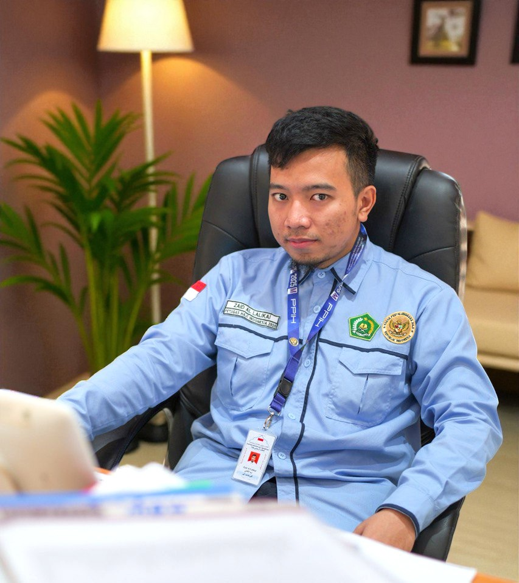
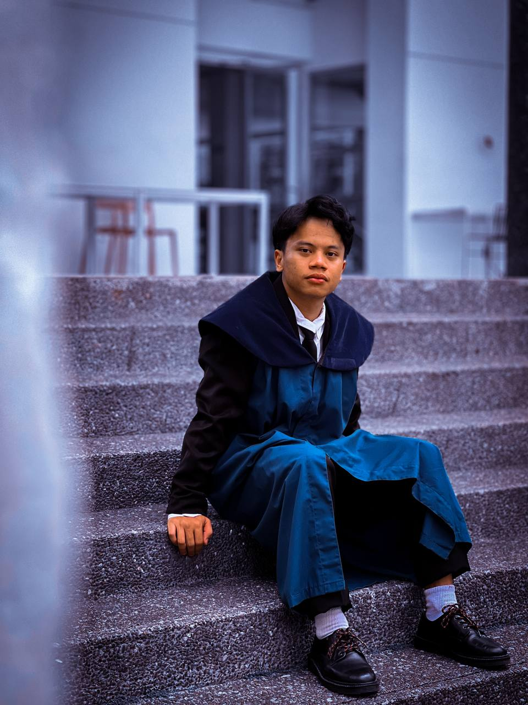
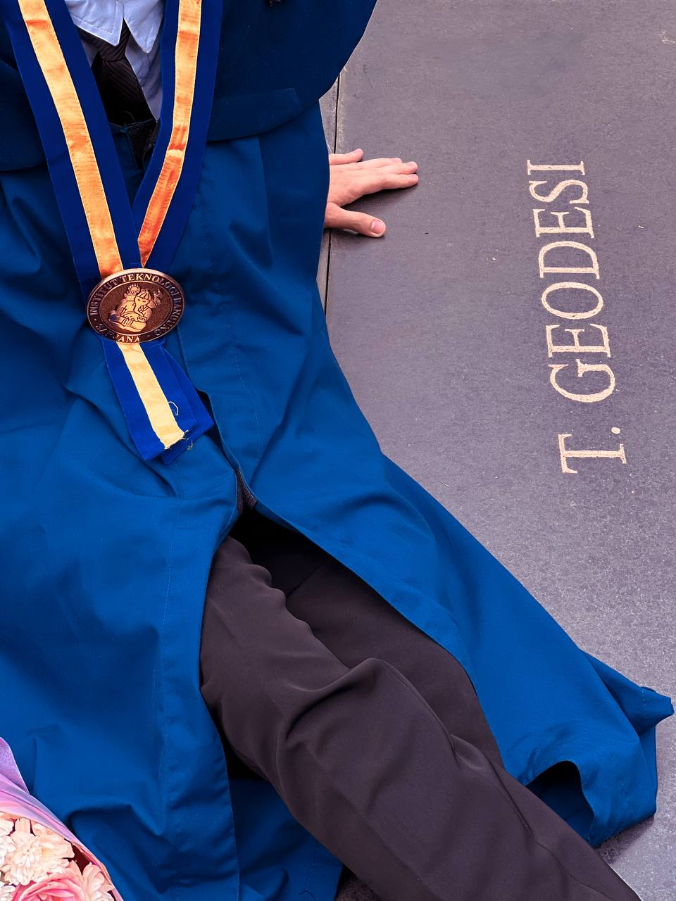
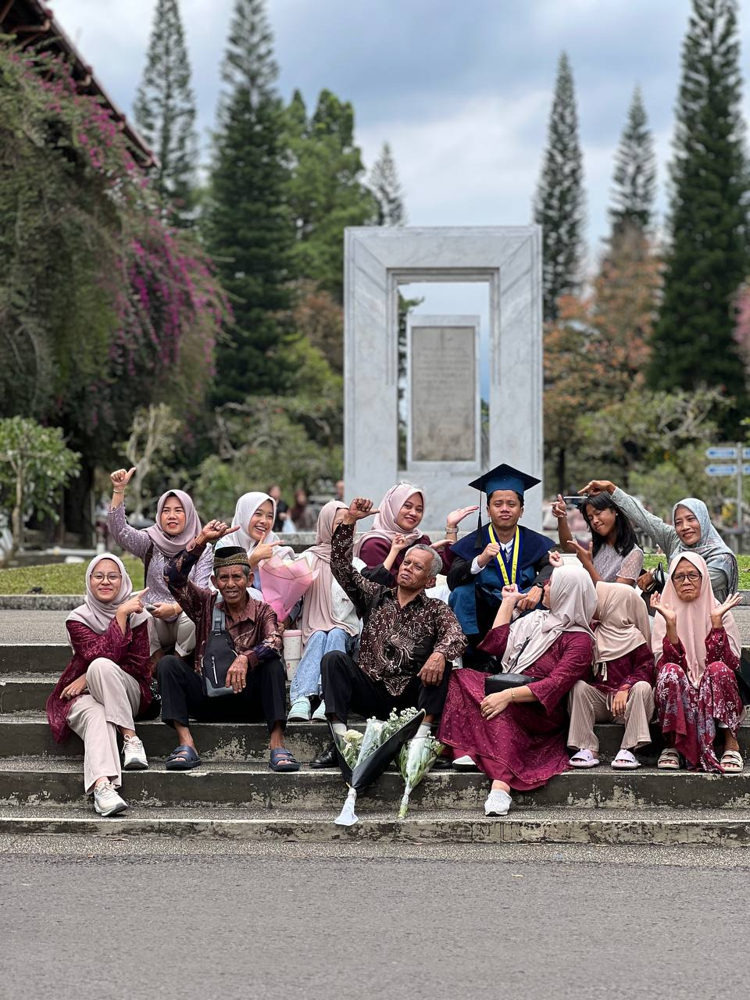

I'm an aspiring software engineer passionate about learning how technology can solve real-world problems. I'm especially interested in helping small businesses and communities grow through digital solutions — something I aim to pursue in the near future. Although I haven't developed professional projects yet, I'm currently learning the fundamentals of web development, exploring how to build clean, functional, and user-friendly websites. I believe that every line of code I learn brings me closer to making a real impact. My goal is to use technology to create meaningful solutions that make life easier for people and organizations. I'm eager to keep improving, collaborating, and contributing to projects that matter. Want to collaborate or discuss an idea? →Let's connect!
The solutive man, ready to bring your ideas to life.
I'm Zaid, a dedicated Junior Software Engineer from Indonesia, helping individuals and small businesses turn their ideas into reality.

Photos
Here are some moments that i captured for documentation
Graduation



Farewell
.jpg)
.jpg)
.jpg)
.jpg)
.jpg)